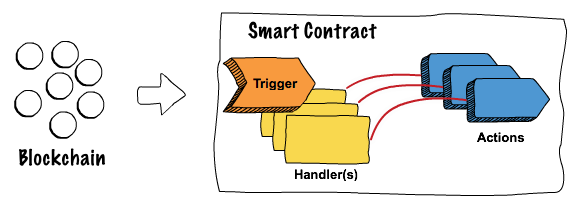

Project Dovetail™ is an Open Source tool for modelling blockchain smart contracts


Dovetail™ | Architecture | Blockchains smart contracts | Contributing | License
Developing blockchain solutions with today’s technology is challenging given the lack of tooling and standardization. Project Dovetail™ by TIBCO LABS™ addresses these issues by providing a graphical interface for modeling smart contracts, making them easier to write, visualize, test, and audit, all without deep programming experience.
Logic is abstracted from low-level code, and contracts can be developed for different blockchain stacks with little or no code.
On-chain and off-chain computation can become more seamless, time to market is improved, and the risk of technology lock-in is reduced. Project Dovetail makes your smart contracts smarter.

What are Smart Contracts
There are many definitions and descriptions of smart contracts, as each blockchain framework tends to implement this capability in its own way (if it does implement this feature at all). However, generally speaking, smart contracts (at least from an enterprise / permissioned perspective) may be thought of as application or business logic (defined in code) that runs within the context of a blockchain network itself.
The idea is to automate the processing of blockchain transactions across the network, use the logic to determine if a transaction will get written to the ledger, and to maintain accuracy, compliance, and trust. In essence, smart contracts represent a method for controlling how changes are made to the underlying blockchain, in a non-centralized and (potentially) untrustworthy environment. Supply chain transaction tracking, healthcare revenue cycle management, consumer contract execution, and government interactions are all areas in which smart contracts (business logic) may be applied. Remember, however, that "smart contracts" are not necessarily "smart" (depends on the code) nor "contracts" (as they may not be viewed as legal contracts). Thus, the term can be a bit misleading :)
Project Dovetail
Project Dovetail™ is a framework that allows for the end to end design, development, testing, and deployment of blockchain smart contracts. Project Dovetail™ allows you to develop smart contracts based on a series of models, helping to:
- Increase security since the modeling abstraction layer will allow for reusable and tested code derived from the model.
- Simplify development via an extendable abstraction layer (flow model)
- Decouple your code from the underlying blockchain technology
- Reduce the amount of code needed
- Increase visibility and audit-ability
- Allow customizable modeling for your industry
- Expose a better UI for the design of smart contracts
Dovetail Core
Dovetail is based on TIBCO FLOGO™, an event-driven app framework used to develop apps for the cloud & IoT edge. It can also be thought of as a lightweight app kernel used by open source & commercial solutions like Dovetail here. The trigger used is based on the cli to generate or transpile your smart contract logic into blockchain technologies languages : R3 Corda, HyperLedger Fabric...
Dovetail Core provides the following key benefits:
⛓ Action chaining enables communication between one or more capabilities in a single, sub 10MB binary!
🏗 Common contribution model build activities and triggers that can be leveraged by all capabilities
🔨 Extensible easily extend the capabilities available by building your own action using the common interfaces
Dovetail Core Contribution Model
Dovetail™ Core exposes three principal contribution interfaces that enable developers to build common capabilities and functionality. These contribution interfaces include:
- Connector Interface a common interface for importing predefined schemas into Dovetail, Hyperledger Composer Connector is an example.
- Trigger Interface a common interface for building event-consumers that dispatch events to one or more actions. The Smart Contract TXN Trigger is an example of a trigger.
- Activity Interface a common interface for exposing common application logic in a reusable manner. Think of this as a function, such as write to ledger, publish events, etc that can be used by all Dovetail apps.
Dovetail Flows
Dovetail Flows provides smart contract logic design capabilities and includes the following key highlights.
🌈 Painless development Visual modeler with step-back debugging capabilities & elegant DSL
⚙️ Ultra-light process engine for conditional flow control
Zero-code Developers
If your background is in or you prefer to develop your smart contracts using zero-coding environments, then read on, because we’ve got something special for you.
Flows Web UI is available via Dovetail releases page.
To report any issues with the Issue tracker on this project.
Dovetail Documentation
Dovetail documentation can be found on the documentation page and the source code in the github page.
Contributing
Want to contribute to Project Dovetail? We've made it easy, all you need to do is fork the repository you intend to contribute to, make your changes and create a Pull Request! Once the pull request has been created, you'll be prompted to sign the CLA (Contributor License Agreement) online.
Not sure where to start? No problem, here are a few suggestions:
- dovetail-contrib: This repository contains all of the contributions, such as activities, triggers, etc. Perhaps there is something missing? Create a new activity or trigger or fix a bug in an existing activity or trigger.
- Browse all of the Project Dovetail repositories and look for issues tagged
kind/help-wantedorgood first issue
If you have any questions, feel free to post an issue and tag it as a question or email tibcolabs@tibco.com.
For additional details, refer to the “Contribution Guidelines”.
License
The top level flogo repo, consisting of flow samples & documentation, is licensed licensed under a BSD-style license. Refer to LICENSE for license text.
Dovetail source code in dovetail-cli, dovetail-contrib, dovetail-java-lib are all licensed under a BSD-style license, refer to LICENSE
Getting Started
Let’s start your Dovetail journey! There’s a lot to learn, but every journey starts somewhere. In this chapter, we’ll discuss:
- Installing Dovetail Studio on Linux, macOS, and Windows
- Installing Dovetail CLI
- Development environment dependencies
Installing the Project Dovetail Studio
Installing the Project Dovetail Studio is quite simple just follow these steps:
1.- Download the latest version for your os architecture and your blockchain target.
You can find the latest release here
Or you can just execute this commands
For Hyperledger fabric development:
mkdir dovetail_installation
cd dovetail_installation
curl -OL https://github.com/TIBCOSoftware/dovetail/releases/download/v0.2.0/TIB_dovetail-fabric_0.2.0_macosx_x86_64.zip
For R3 Corda development:
mkdir dovetail_installation
cd dovetail_installation
curl -OL https://github.com/TIBCOSoftware/dovetail/releases/download/v0.2.0/TIB_dovetail-corda_0.2.0_macosx_x86_64.zip
For Multitarget development:
mkdir dovetail_installation
cd dovetail_installation
curl -OL https://github.com/TIBCOSoftware/dovetail/releases/download/v0.2.0/TIB_dovetail-multitarget_0.2.0_macosx_x86_64.zip
2.- Unzip the downloaded release (for example on mac) (from dovetail_installation folder).
unzip TIB_dovetail-fabric_0.2.0_macosx_x86_64.zip
Starting Dovetail Studio
To get started with your downloaded version of the Dovetail Studio in the previous step just do the following:
1.- Run studio
dovetail/0.2/bin/run-studio.sh eula-accept
Launching Dovetail Studio
To launch Dovetail Studio simply open your favorite web browser, and navigate to http://localhost:8090. You'll see the initial page to create your first smart contract!
Installation Tutorial Video
Introduction
The dovetail cli is a tool to mainly generate smart contracts for a given model built using ui tool Dovetail Studio, so we recommend you to learn how to do that first.
Before you get started
Before you can get started with the cli tools you need to make sure you have the Go programming language and git installed. Go v1.13.x is required.
Don't forget to set your
GOPATHvariable and make sure that$GOPATH/binis part of yourPATH(see here or here for more details)
Installing the cli tools
Copy and paste the following commands to install Project Dovetail™ commandline tool.
curl https://github.com/TIBCOSoftware/dovetail-cli/releases/download/v0.2.0/dovetail-cli-install.sh -sSfL v0.2.0 | sh
The binary dovetail will be in your dovetail-cli/bin directory. You can add /path/to/dovetail-cli/bin/dovetail to your PATH env variable for easier access.
Installation Tutorial Video
Dovetail Studio Requirements
Docker
Docker is needed to run Dovetail Studio, you can find the installation details here:
Hyperledger Fabric Requirements
Hyperledger Fabric SDK
If you are developing for Hyperledger Fabric, below is a link to its installation instructions.
R3 Corda Requirements
Java Programming Language and Tools
If you are developing for R3 Corda you will need Java runtime.
- IMPORTANT: Java SE Development Kit 8 is required
- Maven
If you are developing for R3 Corda, following jars must be available in your local or public Maven Repository.
<dependency>
<groupId>org.jetbrains.kotlin</groupId>
<artifactId>kotlin-stdlib-jre8</artifactId>
<version>1.1.60</version>
</dependency>
<dependency>
<groupId>net.corda</groupId>
<artifactId>corda-core</artifactId>
<version>[2.0.0,)</version>
</dependency>
<dependency>
<groupId>net.corda</groupId>
<artifactId>corda-finance</artifactId>
<version>[2.0.0,)</version>
</dependency>
<dependency>
<groupId>com.tibco.dovetail</groupId>
<artifactId>dovetail-corda</artifactId>
<version>[0.2.0, )</version>
</dependency>
Project Dovetail™ library for R3 Corda is available here, run following command to install it to your local Maven repository
mkdir dovetail_corda
cd dovetail_corda
curl -OL https://github.com/TIBCOSoftware/dovetail-contrib/releases/download/v0.2.0/dovetail-corda-0.2.0.jar
mvn org.apache.maven.plugins:maven-install-plugin:2.5.2:install-file -DgeneratePom=true -DgroupId=com.tibco.dovetail -DartifactId=dovetail-corda -Dversion=0.2.0 -Dfile=dovetail_corda_v0.2.0.jar -Dpackaging=jar
Labs
These labs provide you with guides, tutorials and code samples and will help you work through building and deploying Dovetail smart contracts.
Corda IOU Smart Contract Tutorial
In this tutorial, we will walk you through the steps to model and implement smart contracts and dapps for R3 Corda using Dovetail Studio, then we will use Dovetail CLI to generate runtime artifacts, and also generate RPC client with REST API interfaces for external integration, finally we will use Swagger UI to run some test cases.
The example is a simple "I owe you" use case, the issuer of an IOU is obligated to pay the owner of the IOU amount issued, the ownership of the IOU can be transferred by current owner, and all transactions will be recorded on the ledger.
Before getting started, you should have Project Dovetail™ Studio and Project Dovetail™ CLI installed, and your development environment setup.
If you have Tibco Cloud subscription or Enterprise Flogo studio, you can also upload Dovetail extentions to start smart contract and dapp development. the extensions are included in the corda.zip (see below) under artifacts/studio folder.
Follow these steps to create the empty structure of the tutorial:
- Create the tutorial initial structure
- iou_tutorials
- artifacts
- cli
- network
- corda
mkdir -p iou_tutorial/artifacts
mkdir -p iou_tutorial/cli
mkdir -p iou_tutorial/network/corda
Copy IOU network nodes and scripts
corda.zip has pre-implemented and generated artifacts, nodes and scripts that will help you to get the corda network up and running.
curl -OL https://TIBCOSoftware.github.io/dovetail/tutorials/iou/corda.zip && \
unzip corda.zip && \
rm corda.zip
- copy extracted network/corda/* to your network/corda folder
- copy extracted cli/* to your cli folder
1. IOU Smart Contract
In this section we will show step by step instructions to model and implement IOU smart contract: IOU can be issued, transferred and then settled.
IOU Smart Contract Data Model
Define contract state data schema that should be stored on the ledger
- Start up and open Dovetail Studio WebUI
- Go to Connection tab
- Click "Add Connection"
- Choose "Define Ledger Asset Schema" from the list
- Enter display name, e.g. "my first IOU"
- Enter asset name "IOU"
- Enter module name "com.example.iou"
- Select asset type "Linear State"
- LinearId attribute will be automatically added to the pre-defined fields
- Enter addition fields
- issuer, select "Party" from the type dropdown menu
- holder, select "Party" from the type dropdown menu
- amt, select "Amount
" from the type dropdown menu
- Define party roles
- add "issuer", leave other fields as default
- add "holder", leave other fields as default
- Click "Donee" button
Implement IOU Smart Contract
In this step, we will walk you through step by step the implementation of IOU smart contract transactions: IssueIOU, TransferIOU and SettleIOU.
1 IssueIOU Transaction*
-
Go to Apps Tab > Create to create a new Application "IOU"
-
Create a flow
- flow name "IssueIOU" >
- Add a trigger, select "SmartContract Action Trigger" from the list
- Select "IOU" from the dropdown menu
- Click "Next" and "Next" to get to "Define Transaction Input" section, security and time window are not supported for Corda smart contract
- Add input fields
- linearId, select "LinearId" from type dropdown menu
- issuer, select "Party" from type dropdown menu
- holder, select "Party" from type dropdown menu
- amt, select "Amount
" from type dropdown menu - click "Next"
- Add output fields, leave this blank, click "Continue"
- Select "Copy Schema"
- Select the trigger
- Map to flow inputs
- Now we will implement the flow
- Add "Ledger Operation" activity from Dovetail-Ledger category
- Map input
2 TransferIOU Transaction*
- Create a new flow to implement TransferIOU transaction
- Add a trigger, select "SmartContract Action Trigger" from the list
- Select "IOU" from the dropdown menu
- Click "Next" and "Next" to get to "Define Transaction Input" section, security and time window are not supported for Corda smart contract
- Add input fields
- iou, select "AssetRef" from Type dropdown menu, enter "com.example.iou.IOU" in the RecordType field, select "True" from Consuming dropdown menu
- newHolder, select "Party" from type dropdown menu
- click "Next"
- Add output fields, leave this blank, click "Continue"
- Select "Copy Schema"
- Select the trigger
- Map to flow inputs
- Now we will implement the flow
- Add "Ledger Operation" activity from Dovetail-Ledger category
- Map input
- Add a trigger, select "SmartContract Action Trigger" from the list
3 SettleIOU Transaction*
- Create a new flow to implement SettleIOU transaction
- Add a trigger, select "SmartContract Action Trigger" from the list
* Select "IOU" from the dropdown menu
* Click "Next" and "Next" to get to "Define Transaction Input" section, security and time window are not supported for Corda smart contract
* Add input fields
* iou, select "AssetRef" from Type dropdown menu, enter "com.example.iou.IOU" in the RecordType field, select "True" from Consuming dropdown menu
* funds, select "AssetRef
" from Type dropdown menu, select "True" from Consuming dropdown menu, select "True" from Repeating dropdown menu * click "Next" * Add output fields, leave this blank, click "Continue" * Select "Copy Schema" - Select the trigger
- Map to flow inputs
- Now we will implement the flow
- Add "Payment Processor" activity from Dovetail-Ledger category
- Map input
- Select the trigger
- Add a trigger, select "SmartContract Action Trigger" from the list
* Select "IOU" from the dropdown menu
* Click "Next" and "Next" to get to "Define Transaction Input" section, security and time window are not supported for Corda smart contract
* Add input fields
* iou, select "AssetRef" from Type dropdown menu, enter "com.example.iou.IOU" in the RecordType field, select "True" from Consuming dropdown menu
* funds, select "AssetRef
Export IOU Smart Contract Application
- Go to IOU application
- Click on "Export app" button, save the file IOU.json to the artifacts folder inside iou_tutorial
The exported json file will be used to generate Corda ContractState and Contract, and it is also used to facilitate the implementation of CorDapp flows.
Generate Corda Artifacts
- Maven should be installed on your system, and mvn is in your PATH
- Dovetail CLI should installed and in your PATH, it is also included in the cli folder in the corda.zip file (for mac only)
- Latest relese of dovetail-corda-x.x.x.jar should be installed to your local maven repo, it is also included in corda.zip, you can run cli/mvninstall.sh to install the jar file
Run following command from iou_tutorial directory, R3 Corda contract kotlin-IOUContract-1.0.0.jar is generated and written to artifacts/corda/iou folder, and installed in your local maven repository.
cd iou_tutorial
dovetail corda contract generate -m artifacts/IOU.json -v 1.0.0 -t artifacts/corda --namespace com.example.iou
Develop Corda Distributed Application
1 Parties and Roles for the network
For this tutorial, the story line is party "charlie" issues an IOU to party "alice", party "alice" then transfers the IOU to party "bob", finally party "charlie" settles the IOU with party "bob". party "bank" is the cash issuer.
Below the are the dapp flows each party should implement:
- charlie is the IOU issuer
- Implement IssueIOU initiating flow
- Implememt TransferIOU receiving flow
- Implement SettleIOU initiating flow
- alice is the original IOU holder, and will transfer the IOU to bob
- Implement IssueIOU receiving flow
- Implement TransferIOU initiating flow
- bob is the new IOU holder
- Implement TransferIOU receiving flow
- Implement SettleIOU receiving flow
- bank is the cash issuer
- Will use Corda CashIssueAndPayment flow to issue cash to charlie
2. Import Smart Contract
Before we start implementing the flows, Dovetail needs to know the smart contract transactions and the input parameters of each transaction.
- Go to Connection tab
- Add Connection
- Select "Import Dovetail Contract"
- Enter name "IOUContract"
- Browse and select artifacts/iou.json file
- Click "Done"
CorDapp for charlie
Step by step instructions to create distributed application "charlie" for party charlie.
1. IssueIOU initiator flow
- Create a flow
- flow name: IssueIOUInitiator
- add a trigger : select "Dovetail CorDApp Flow Initiator" from the list
- select false for "Use confidential identities for this transaction?"
- select false for "Send transactions to observers?"
- click "Next" button
- add following flow input parameters
- holder : Type = Party, PartyRole = Participant
- amt: Type = Amount
- extId: Type = String
- click "Continue" button
- select "Copy Schema"
- select the trigger, and map flow input
- implement IssueIOUInitiator flow
- select BuildTransactoinProposal activity from Dovetail-CorDApp category
- select "IOUContract:" from contract dropdown
- select com.example.iou.IssueIOU from transaction dropdown
- map the activity input
- use cordapp.createLinearIdFromExternalId($flow.transactionInput.extId) to map iou.linearId
- You will see an error at design time for this function, ignore the error for now, it is supported at runtime
2. TransferIOU receiver flow
- Create a flow
- flow name: TransferIOUResponder
- select trigger : Dovetail CorDApp Flow Receiver
- select receiver from flow type dropdown
- select false for "Use confidential identities for this transaction?"
- initiator flow name: com.alice.iou.flows.TransferIOUInitiator
- click "Continue" button
- select "Copy Schema"
- select the trigger, and map flow input
3. SettleIOU initiator flow
- Create a flow
- flow name: SettleIOUInitiator
- select trigger : Dovetail CorDApp Flow Initiator
- select false for "Use confidential identities for this transaction?"
- select false for "Send transactions to observers?"
- click "Next" button
- add following flow input parameters
- iouId : Type = LinearId
- click "Continue" button
- select "Copy Schema"
- select the trigger, and map flow input
- Implement SettleIOUInitiator flow
- add SimpleVaultQuery activity from Dovetail-CorDApp category
- Configuration screen
- select IOU from asset dropdow
- Map input
- Configuration screen
- if IOU is found * add CashWallet activity from Dovetail-CorDApp category * Select "Retrieve Funds" from dropdown * Map input * add BuildTransactoinProposal Dovetail-CorDApp category * select IOU from contract dropdown * select com.example.iou.SettleIOU from transaction dropdown * map the activity input
- otherwise throw error
- add SimpleVaultQuery activity from Dovetail-CorDApp category
4. Export the "charlie" applicatio
export the application to artifiacts/charlie.json
CorDapp for alice
Step by step instructions to create distributed application "alice" for party alice.
1. IssueIOU receiver flow
- Create a flow
- Create a flow
- flow name: IssueIOUResponder
- select trigger : Dovetail CorDApp Flow Receiver
- select receiver from flow type dropdown
- select false for "Use confidential identities for this transaction?"
- initiator flow name: com.charlie.iou.flows.IssueIOUInitiator
- click "Continue" button
- select "Copy Schema"
- select the trigger, and map flow input
2. TransferIOU initiator flow
- flow name: TransferIOUInitiator
- add a trigger : select "Dovetail CorDApp Flow Initiator" from the list
- select false for "Use confidential identities for this transaction?"
- select false for "Send transactions to observers?"
- click "Next" button
- add following flow input parameters
- iouId : Type = LinearId
- newHolder: Type = Party, PartyRole = Participant
- click "Continue" button
- select "Copy Schema"
- select the trigger, and map flow input
- implement TransferIOUInitiator flow
- add SimpleVaultQuery activity from Dovetail-CorDApp category
- Configuration screen
- select IOU from asset dropdow
- Map input
- Configuration screen
- if IOU is found
- add BuildTransactoinProposal activity from Dovetail-CorDApp category
- select "IOUContract:" from contract dropdown
- select com.example.iou.TransferIOU from transaction dropdown
- map the activity input
- add BuildTransactoinProposal activity from Dovetail-CorDApp category
- otherwise throw error
- add SimpleVaultQuery activity from Dovetail-CorDApp category
- add a trigger : select "Dovetail CorDApp Flow Initiator" from the list
3. Export the "alice" applicatio
export the application to artifiacts/alice.json
CorDapp for bob
Step by step instructions to create distributed application "bob" for party bob.
1. TransferIOU receiver flow
- Create a flow
- Create a flow
- flow name: TransferIOUResponder
- select trigger : Dovetail CorDApp Flow Receiver
- select receiver from flow type dropdown
- select false for "Use confidential identities for this transaction?"
- initiator flow name: com.alice.iou.flows.TransferIOUInitiator
- click "Continue" button
- select "Copy Schema"
- select the trigger, and map flow input
2. SettleIOU receiver flow
- Create a flow
- Create a flow
- flow name: SettleIOUResponder
- select trigger : Dovetail CorDApp Flow Receiver
- select receiver from flow type dropdown
- select false for "Use confidential identities for this transaction?"
- initiator flow name: com.charlie.iou.flows.SettleIOUInitiator
- click "Continue" button
- select "Copy Schema"
- select the trigger, and map flow input
3. Export the "bob" applicatio
export the application to artifiacts/bob.json
Generate CorDapp artifacts
1. Export CorDapp flows
- Export charlie application as charlie.json to artifacts/ folder
- Export alice application as alice.json to artifacts/ folder
- Export bob application as bob.json to artifacts/ folder
2. Generate CorDapp dependencies
CorDapp responder flows have compile time and runtime dependency on their corresponding initiator flows, however since flows are private to each organization, Tibco Dovetail generates a base initator class without implementation details and can be shared with business partners.
run following command from iou_tutorial folder
2.1 charlie
dovetail corda dapp generate -m artifacts/charlie.json -v 1.0.0 -t artifacts/corda --namespace com.charlie.iou.flows --api
2.2 alice
dovetail corda dapp generate -m artifacts/alice.json -v 1.0.0 -t artifacts/corda --namespace com.alice.iou.flows --api
3. Create dependency pom file for each organization
3.1 charlie
copy following to artifacts/charlie.pom file
<dependency>
<groupId>com.alice.iou.flows</groupId>
<artifactId>alice-api</artifactId>
<version>1.0.0</version>
</dependency>
3.2 alice
copy following to artifacts/alice.pom file
<dependency>
<groupId>com.charlie.iou.flows</groupId>
<artifactId>charlie-api</artifactId>
<version>1.0.0</version>
</dependency>
3.2 bob
copy following to artifacts/bob.pom file
<dependency>
<groupId>com.charlie.iou.flows</groupId>
<artifactId>charlie-api</artifactId>
<version>1.0.0</version>
</dependency>
<dependency>
<groupId>com.alice.iou.flows</groupId>
<artifactId>alice-api</artifactId>
<version>1.0.0</version>
</dependency>
4. Generate CorDapps
run following command from iou_tutorial folder
4.1 charlie
dovetail corda dapp generate -m artifacts/charlie.json -v 1.0.0 -t artifacts/corda --namespace com.charlie.iou.flows --dependency-file artifacts/charlie.pom
4.2 alice
dovetail corda dapp generate -m artifacts/alice.json -v 1.0.0 -t artifacts/corda --namespace com.alice.iou.flows --dependency-file alice.pom
4.3 bob
dovetail corda dapp generate -m artifacts/bob.json -v 1.0.0 -t artifacts/corda --namespace com.bob.iou.flows --dependency-file bob.pom
Generate Corda Client
Dovetail ClI generates RPC client from CorDApp flows and Smart contract metadata, the generated client is a standalone springboot web server that exposes REST APIs to allow applications to invoke CorDapp flows.
The generated client also contains an embedded event streaming service to pulish vault state changes to specified messaging service, at present, only TIBCO Cloud Messaging is supported, use commandline --streaming eftl to enable streaming service.
1 Create dependency pom file
copy following to artifacts/iou.pom file
<dependency>
<groupId>com.example.iou</groupId>
<artifactId>IOU</artifactId>
<version>1.0.0</version>
</dependency>
2. Generate Corda Client
run following command from iou_tutorial folder, a web client is generated for charlie, alice and bob. The last command is to generate a generic web client than will be used for party 'bank' to issue and transfer cash.
2.1. charlie
dovetail corda client generate --cordapp-json artifacts/charlie.json --smartcontract-json artifacts/IOU.json -v 1.0.0 -t artifacts/corda --cordapp-ns com.charlie.iou.flows --dependency-file artifacts/iou.pom --streaming none
2.2. alice
dovetail corda client generate --cordapp-json artifacts/alice.json --smartcontract-json artifacts/IOU.json -v 1.0.0 -t artifacts/corda --cordapp-ns com.alice.iou.flows --dependency-file artifacts/iou.pom --streaming none
2.3. bob
dovetail corda client generate --cordapp-json artifacts/bob.json --smartcontract-json artifacts/IOU.json -v 1.0.0 -t artifacts/corda --cordapp-ns com.bob.iou.flows --dependency-file artifacts/iou.pom --streaming none
2.4. bank
dovetail corda client generate -v 1.0.0 -t artifacts/corda
Test IOU Smart Contract and dapp flows on Corda
Start up corda network
1 Run code nodes
from your cli folder, run following commands, check logs under network/corda/nodes/*/log to verify that each node has been started
- ./network_clean.sh to clean up logs and vault database
- ./network_start.sh to start up nodes
to stop all nodes, run following command
- ./network_stop.sh to shutdown all nodes
2 Start up web clients
from your cli folder, run following command to start up all web servers, check cli/log to verify web servers are started.
- ./start_webservers.sh
from your cli folder, run following command to stop all web servers
- ./stop_webservers.sh
3 Open swagger UI
- alice: http://localhost:9000/swagger-ui.html
- charlie : http://localhost:9001/swagger-ui.html
- bob: http://localhost:9002/swagger-ui.html
- bank: http://localhost:9004/swagger-ui.html
Test IOU Smart Contract and dapp on Corda
1 Issue cash
Use bank's swagger UI to issue and transfer cash to charlie.
-
go to security-controller section
- login method
- username = user1, password = test
- execute
- login method
-
go to cash-controller section
- /cash/flow/issue-payment method
- Authorizarion: copy the token value from login output, without the quotes
- Input:
{ "amount": { "quantity": 100000, "currency": "USD" }, "issuerRef": "00", "recipient": "O=charlie,L=New York,C=US", "anonymous": false, "notary": "O=Notary,L=London,C=GB" } - execute, if successful, you should see output similar to following
{ "transactionId": "FC85B7E74E8D9A4BDD39A2D83FA2C41C4CB57A296E43A3B5D9AF08FC7CF06E1B" }
- /cash/flow/issue-payment method
2 Issue an IOU
Use charlie's swagger UI to issue an IOU
-
go to security-controller section
- login method
- username = user1, password = test
- execute
- login method
-
go to query-controller section
- /query/states
- Authorizarion: copy the token value from login output, without the quotes
- execute, you should see cash is in the vault
-
go to main-controller section
- /api/issueiouinitiatort method
- Authorizarion: copy the token value from login output, without the quotes
- Input:
{ "holder": "O=alice,L=New York,C=US", "amt": { "quantity": 10000, "currency": "USD" }, "extId": "iou1" }- execute
- /api/issueiouinitiatort method
-
go to query-controller section
- /query/states
- Authorizarion: copy the token value from login output, without the quotes
- execute, you should see com.example.iou.IOU is now in the vault
3 Transfer the IOU
Use alice's swagger to transfer IOU to bob.
-
go to security-controller section
- login method
- username = user1, password = test
- execute
- login method
-
go to query-controller section
- /query/states
- Authorizarion: copy the token value from login output, without the quotes
- execute, you should see com.example.iou.IOU in the output, copy the linearId.id value
-
go to main-controller section
- /api/transferiouinitiator
- Authorizarion: copy the token value from login output, without the quotes
- Input
{ "iouId": { "externalId": "iou1", "id": "paste the linearId.id value here" }, "newHoder": "O=bob,L=New York,C=US" }- execute
- /api/transferiouinitiator
-
go to query-controller section
- /query/states
- Authorizarion: copy the token value from login output, without the quotes
- execute, com.example.iou.IOU is no longer in the vault
4 Settle the IOU
Use charlie's swagger UI to settle the IOU with cash
- go to main-controller section
- /api/settleiouinitiator method
- Authorizarion: copy the token value from login output, without the quotes
- Input:
{ "iouId": { "externalId": "iou1", "id": "copy iou linearId.id value here" } } - go to query-controller section
- /query/states
- Authorizarion: copy the token value from login output, without the quotes
- execute, com.example.iou.IOU is no longer in the vault, and cash amount is reduced by $100
- /api/settleiouinitiator method
Fabric Samples and Tutorials
You can follow Hyperledger Fabric samples and tutorials in our Dovetail Contrib repository.
Contributing to Project Dovetail
Are you interested in contributing to Project Dovetail? If so, this doc was created specifically for you! If you’re not ready to start contributing code, no problem, feel free to check out the documentation issues and begin by helping enhance the documentation!
If you’re ready and interested to make code contributions, please contact tibcolabs@tibco.com.
Dovetail Source Code Projects
Project Dovetail™ consists of the following sub-projects available as separate repos:
- dovetail: Documentation repository and release for dovetail studio UI
- dovetail-cli: Command line tools for building Dovetail apps & extensions
- dovetail-contrib: Dovetail contributions/extensions
- dovetail-java-lib: Dovetail java runtime for smart contract flows
Dovetail Community
You can contact us using one of the following channels:
Email: tibcolabs@tibco.com
Tibcommunity: Web Page